关注微信号【路飞】，干货马上就来！

前言
给大家整理了一下每个 case 一些还算不错的文章吧（还包括一些躺在我收藏夹里的好文章），大家可以自己看文章总结一下答案，这样也会理解更深刻。
并不是所有文章都需要看，希望是一个抛砖引玉的作用，大家也可以锻炼一下自己寻找有效资料的能力 ~
( 文章排序不分前后，随机排序 ~)
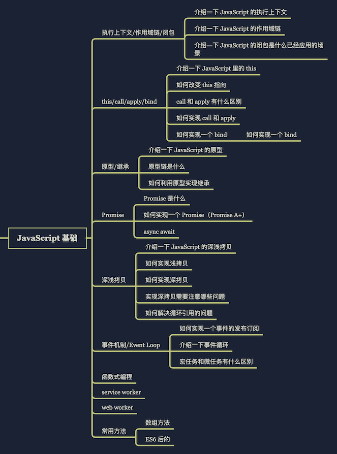
1.1 执行上下文/作用域链/闭包
介绍一下javascript的执行上下文
简而言之，执行上下文是评估和执行 JavaScript 代码的环境的抽象概念。每当 Javascript 代码在运行的时候，它都是在执行上下文中运行。
- 全局执行上下文—-这是默认或者说基础的上下文，任何不在函数内部的代码都在全局上下文中。它会执行两件事：创建一个全局的 window 对象（浏览器的情况下），并且设置 this 的值等于这个全局对象。一个程序中只会有一个全局执行上下文。
- 函数执行上下文—-每当一个函数被调用时, 都会为该函数创建一个新的上下文。每个函数都有它自己的执行上下文，不过是在函数被调用时创建的。函数上下文可以有任意多个。每当一个新的执行上下文被创建，它会按定义的顺序（将在后文讨论）执行一系列步骤。
- Eval 函数执行上下文—-执行在 eval 函数内部的代码也会有它属于自己的执行上下文，但由于 JavaScript 开发者并不经常使用 eval，所以在这里我不会讨论它。
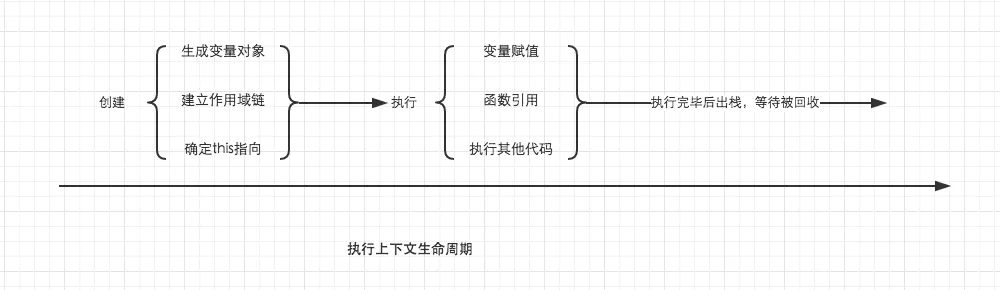
介绍一下javascript的作用域链
对于每个执行上下文，都有三个重要属性：变量对象(Variable object，VO) 作用域链(Scope chain) this
当查找变量的时候，会先从当前上下文的变量对象中查找，如果没有找到，就会从父级(词法层面上的父级)执行上下文的变量对象中查找，一直找到全局上下文的变量对象，也就是全局对象。这样由多个执行上下文的变量对象构成的链表就叫做作用域链
静态作用域与动态作用域
因为 JavaScript 采用的是词法作用域，函数的作用域在函数定义的时候就决定了。
而与词法作用域相对的是动态作用域，函数的作用域是在函数调用的时候才决定的。
介绍一下javascript的闭包是什么，以及应用的场景
1）什么是闭包
函数执行后返回结果是一个内部函数，并被外部变量所引用，如果内部函数持有被执行函数作用域的变量，即形成了闭包。
可以在内部函数访问到外部函数作用域。使用闭包，一可以读取函数中的变量，二可以将函数中的变量存储在内存中，保护变量不被污染。而正因闭包会把函数中的变量值存储在内存中，会对内存有消耗，所以不能滥用闭包，否则会影响网页性能，造成内存泄漏。当不需要使用闭包时，要及时释放内存，可将内层函数对象的变量赋值为null。
2）闭包原理
函数执行分成两个阶段(预编译阶段和执行阶段)。
在预编译阶段，如果发现内部函数使用了外部函数的变量，则会在内存中创建一个“闭包”对象并保存对应变量值，如果已存在“闭包”，则只需要增加对应属性值即可。
执行完后，函数执行上下文会被销毁，函数对“闭包”对象的引用也会被销毁，但其内部函数还持用该“闭包”的引用，所以内部函数可以继续使用“外部函数”中的变量
利用了函数作用域链的特性，一个函数内部定义的函数会将包含外部函数的活动对象添加到它的作用域链中，函数执行完毕，其执行作用域链销毁，但因内部函数的作用域链仍然在引用这个活动对象，所以其活动对象不会被销毁，直到内部函数被销毁后才被销毁。
3）优点
可以从内部函数访问外部函数的作用域中的变量，且访问到的变量长期驻扎在内存中，可供之后使用
避免变量污染全局
把变量存到独立的作用域，作为私有成员存在
4）缺点
对内存消耗有负面影响。因内部函数保存了对外部变量的引用，导致无法被垃圾回收，增大内存使用量，所以使用不当会导致内存泄漏
对处理速度具有负面影响。闭包的层级决定了引用的外部变量在查找时经过的作用域链长度
可能获取到意外的值(captured value)
4）应用场景
应用场景一： 典型应用是模块封装，在各模块规范出现之前，都是用这样的方式防止变量污染全局。
var Yideng = (function () {
// 这样声明为模块私有变量，外界无法直接访问
var foo = 0;
function Yideng() {}
Yideng.prototype.bar = function bar() {
return foo;
};
return Yideng;
}());应用场景二： 在循环中创建闭包，防止取到意外的值。
如下代码，无论哪个元素触发事件，都会弹出 3。因为函数执行后引用的 i 是同一个，而 i 在循环结束后就是 3
for (var i = 0; i < 3; i++) {
document.getElementById('id' + i).onfocus = function() {
alert(i);
};
}
//可用闭包解决
function makeCallback(num) {
return function() {
alert(num);
};
}
for (var i = 0; i < 3; i++) {
document.getElementById('id' + i).onfocus = makeCallback(i);
}1.2 this/call/apply/bind
介绍下javascript里的this
执行上下文的创建阶段，会分别生成变量对象，建立作用域链，确定this指向。其中变量对象与作用域链我们都已经明白了。本文的关键，就是确定this指向。
首先，我们需要得出一个非常重要的，并且一定要牢记于心的结论，this的指向，是在函数被调用的时候确定的。也就是执行上下文被创建时确定的。
在一个函数上下文中，this由调用者提供，由调用函数的方式来决定。如果调用者函数，被某一个对象所拥有，那么该函数在调用时，内部的this指向该对象。如果函数独立调用，那么该函数内部的this，则指向undefined。但是在非严格模式中，当this指向undefined时，它会被自动指向全局对象。
如何改变this的指向
由call或apply、bind调用：绑定到指定的对象
call和apply的区别
相同点：1、call和apply的第一个参数thisArg，都是func运行时指定的this。而且，this可能不是该方法看到的实际值：如果这个函数处于非严格模式下，则指定为 null 或 undefined 时会自动替换为指向全局对象，原始值会被包装。
2、都可以只传递一个参数。
不同点：apply只接收两个参数，第二个参数可以是数组也可以是类数组，其实也可以是对象，后续的参数忽略不计。call接收第二个及以后一系列的参数。bind 方法 与 apply 和 call 比较类似，也能改变函数体内的 this 指向。不同的是，bind 方法的返回值是函数，并且需要稍后调用，才会执行。而 apply 和 call 则是立即调用
如何实现一个bind
模拟实现call
Function.prototype.myCall = function (context) {
var context = context || window
// 给 context 添加一个属性
// getValue.call(a, 'mei', '24') => a.fn = getValue
context.fn = this
// 将 context 后面的参数取出来
var args = [...arguments].slice(1)
// getValue.call(a, 'mei', '24') => a.fn('mei', '24')
var result = context.fn(...args)
// 删除 fn
delete context.fn
return result
}测试一下：
let a = {
value: 1
}
function getValue(name, age) {
console.log(name)
console.log(age)
console.log(this.value)
}
getValue.myCall(a, 'mei', '24');//mei 24 1模拟实现apply
Function.prototype.myApply = function (context) {
var context = context || window;
context.fn = this;
var result;
if (arguments[1]) {
result = context.fn(...arguments[1]);
} else {
result = context.fn()
}
delete context.fn;
return result;
}测试一下：
let a = {
value: 1
}
function getValue(name, age) {
console.log(name)
console.log(age)
console.log(this.value)
}
getValue.myApply(a, ['mei', '24']);//mei 24 1模拟实现bind
Function.prototype.myBind = function (context) {
if (typeof this !== 'function') {
throw new TypeError('error');
}
var _this = this;
var args = [...arguments].slice(1);
return function F() {
if (this instanceof F) {
return new _this(...args, ...arguments)
}
return _this.apply(context, args.concat(...arguments))
}
}测试一下：
let a = {
value: 1
}
function getValue(name, age) {
console.log(name)
console.log(age)
console.log(this.value)
}
getValue.myBind(a, 'mei', '24')();//mei 24 11.3 原型/继承
介绍一下javascript的原型
每个函数都有一个 prototype 属性，就是我们经常在各种例子中看到的那个 prototype ，比如：
function Person() {
}
// 虽然写在注释里，但是你要注意：
// prototype是函数才会有的属性
Person.prototype.name = 'Kevin';
var person1 = new Person();
var person2 = new Person();
console.log(person1.name) // Kevin
console.log(person2.name) // Kevin那这个函数的 prototype 属性到底指向的是什么呢？是这个函数的原型吗？
其实，函数的 prototype 属性指向了一个对象，这个对象正是调用该构造函数而创建的实例的原型，也就是这个例子中的 person1 和 person2 的原型。
那什么是原型呢？你可以这样理解：每一个JavaScript对象(null除外)在创建的时候就会与之关联另一个对象，这个对象就是我们所说的原型，每一个对象都会从原型”继承”属性。
让我们用一张图表示构造函数和实例原型之间的关系：
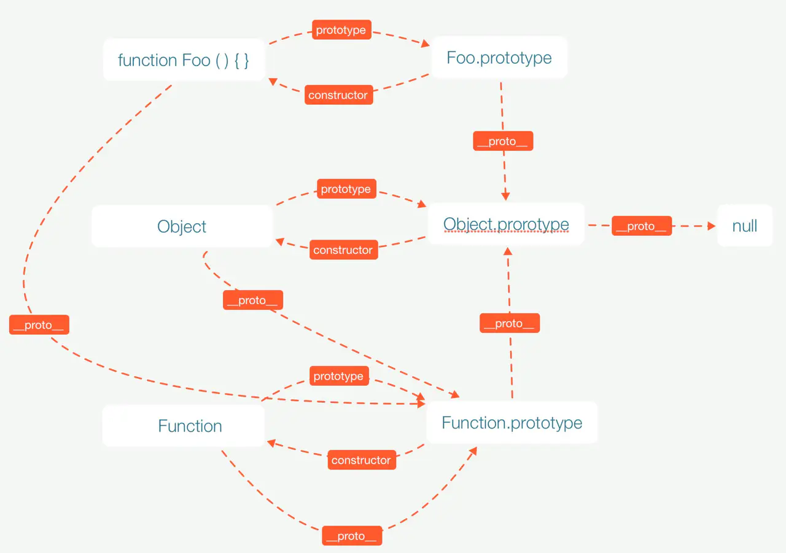
原型链是什么
从当前对象出发，通过proto属性向上找构造函数的prototype属性，一直找到null而结束，在查找过程中形成的链叫做原型链
如何利用原型实现继承
1、原型链继承
// 实现原型链的一种基本模式
function SuperType(){
this.property = true;
}
SuperType.prototype.getSuperValue = function(){
return this.property;
};
function SubType(){
this.subproperty = false;
}
// 继承，用 SuperType 类型的一个实例来重写 SubType 类型的原型对象
SubType.prototype = new SuperType();
SubType.prototype.getSubValue = function(){
return this.subproperty;
};
var instance = new SubType();
alert(instance.getSuperValue()); // true2、借用构造函数继承（也称伪造对象或经典继承）
// 在子类型构造函数的内部调用超类型构造函数；使用 apply() 或 call() 方法将父对象的构造函数绑定在子对象上
function SuperType(){
// 定义引用类型值属性
this.colors = ["red","green","blue"];
}
function SubType(){
// 继承 SuperType，在这里还可以给超类型构造函数传参
SuperType.call(this);
}
var instance1 = new SubType();
instance1.colors.push("purple");
alert(instance1.colors); // "red,green,blue,purple"
var instance2 = new SubType();
alert(instance2.colors); // "red,green,blue"3、组合继承（也称伪经典继承）
// 将原型链和借用构造函数的技术组合到一块。使用原型链实现对原型属性和方法的继承，而通过借用构造函数来实现对实例属性的继承。这样，既通过在原型上定义方法实现了函数复用，又能够保证每个实例都有自己的属性。
function SuperType(name){
this.name = name;
this.colors = ["red","green","blue"];
}
SuperType.prototype.sayName = function(){
alert(this.name);
};
function SubType(name,age){
// 借用构造函数方式继承属性
SuperType.call(this,name);
this.age = age;
}
// 原型链方式继承方法
SubType.prototype = new SuperType();
SubType.prototype.constructor = SubType;
SubType.prototype.sayAge = function(){
alert(this.age);
};
var instance1 = new SubType("luochen",22);
instance1.colors.push("purple");
alert(instance1.colors); // "red,green,blue,purple"
instance1.sayName();
instance1.sayAge();
var instance2 = new SubType("tom",34);
alert(instance2.colors); // "red,green,blue"
instance2.sayName();
instance2.sayAge();4、原型式继承
// 借助原型可以基于已有的对象创建新对象，同时还不必因此创建自定义类型。
1、自定义一个函数来实现原型式继承
function object(o){
function F(){}
F.prototype = o;
return new F();
}
使用 Object.create() 方法实现原型式继承
var person = {
name: "luochen",
colors: ["red","green","blue"]
};
var anotherPerson1 = Object.create(person,{
name: {
value: "tom"
}
});
var anotherPerson2 = Object.create(person,{
name: {
value: "jerry"
}
});
anotherPerson1.colors.push("purple");
alert(anotherPerson1.name); // "tom"
alert(anotherPerson2.name); // "jerry"
alert(anotherPerson1.colors); // "red,green,blue,purple"
alert(anotherPerson2.colors); // "red,green,bule,purple";5、寄生式继承
// 创建一个仅用于封装继承过程的函数，该函数在内部以某种方式来增强对象，最后返回这个对象
function createPerson(original){
var clone = Object.create(original); // 通过 Object.create() 函数创建一个新对象
clone.sayGood = function(){ // 增强这个对象
alert("hello world！！！");
};
return clone; // 返回这个对象
}6、寄生组合式继承
// 通过借用构造函数来继承属性，通过原型链的混成形式来继承方法。本质上，就是使用寄生式继承来继承超类型的原型，然后再将结果指定给子类型的原型
function SuperType(name){
this.name = name;
this.colors = ["red","green","blue"];
}
SuperType.prototype.sayName = function(){
alert(this.name);
};
function SubType(name,age){
SuperType.call(this,name);
this.age = age;
}
// 创建超类型原型的一个副本
var anotherPrototype = Object.create(SuperType.prototype);
// 重设因重写原型而失去的默认的 constructor 属性
anotherPrototype.constructor = SubType;
// 将新创建的对象赋值给子类型的原型
SubType.prototype = anotherPrototype;
SubType.prototype.sayAge = function(){
alert(this.age);
};
var instance1 = new SubType("luochen",22);
instance1.colors.push("purple");
alert(instance1.colors); // "red,green,blue,purple"
instance1.sayName();
instance1.sayAge();
var instance2 = new SubType("tom",34);
alert(instance2.colors); // "red,green,blue"
instance2.sayName();
instance2.sayAge();1.4 Promise
Promise是什么
Promise 是异步编程的一种解决方案：
从语法上讲，promise是一个对象，从它可以获取异步操作的消息；从本意上讲，它是承诺，承诺它过一段时间会给你一个结果。
promise有三种状态：pending(等待态)，fulfiled(成功态)，*rejected(失败态); * 状态一旦改变，就不会再变。创造promise实例后，它会立即执行。
promise是用来解决两个问题的：
- 回调地狱，代码难以维护， 常常第一个的函数的输出是第二个函数的输入这种现象
- promise可以支持多个并发的请求，获取并发请求中的数据
- 这个promise可以解决异步的问题，本身不能说promise是异步的
es6 promise用法大全
Promise是一个构造函数，自己身上有all、reject、resolve这几个眼熟的方法，原型上有then、catch等同样很眼熟的方法。
那就new一个
let p = new Promise((resolve, reject) => {
//做一些异步操作
setTimeout(() => {
console.log('执行完成');
resolve('我是成功！！');
}, 2000);
});Promise的构造函数接收一个参数：函数，并且这个函数需要传入两个参数：
resolve ：异步操作执行成功后的回调函数
reject：异步操作执行失败后的回调函数
then 链式操作的用法
所以，从表面上看，Promise只是能够简化层层回调的写法，而实质上，Promise的精髓是“状态”，用维护状态、传递状态的方式来使得回调函数能够及时调用，它比传递callback函数要简单、灵活的多。所以使用Promise的正确场景是这样的：
p.then((data) => {
console.log(data);
})
.then((data) => {
console.log(data);
})
.then((data) => {
console.log(data);
});reject的用法 :
把Promise的状态置为rejected，这样我们在then中就能捕捉到，然后执行“失败”情况的回调。看下面的代码。
let p = new Promise((resolve, reject) => {
//做一些异步操作
setTimeout(function(){
var num = Math.ceil(Math.random()*10); //生成1-10的随机数
if(num<=5){
resolve(num);
}
else{
reject('数字太大了');
}
}, 2000);
});
p.then((data) => {
console.log('resolved',data);
},(err) => {
console.log('rejected',err);
}
); then中传了两个参数，then方法可以接受两个参数，第一个对应resolve的回调，第二个对应reject的回调。所以我们能够分别拿到他们传过来的数据。多次运行这段代码，你会随机得到下面两种结果：
resolved 5或者rejected 数字太大
catch的用法
我们知道Promise对象除了then方法，还有一个catch方法，它是做什么用的呢？其实它和then的第二个参数一样，用来指定reject的回调。用法是这样：
p.then((data) => {
console.log('resolved',data);
}).catch((err) => {
console.log('rejected',err);
});效果和写在then的第二个参数里面一样。不过它还有另外一个作用：在执行resolve的回调（也就是上面then中的第一个参数）时，如果抛出异常了（代码出错了），那么并不会报错卡死js，而是会进到这个catch方法中。请看下面的代码：
p.then((data) => {
console.log('resolved',data);
console.log(somedata); //此处的somedata未定义
})
.catch((err) => {
console.log('rejected',err);
});在resolve的回调中，我们console.log(somedata);而somedata这个变量是没有被定义的。如果我们不用Promise，代码运行到这里就直接在控制台报错了，不往下运行了。但是在这里，会得到这样的结果：
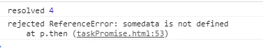
也就是说进到catch方法里面去了，而且把错误原因传到了reason参数中。即便是有错误的代码也不会报错了，这与我们的try/catch语句有相同的功能
all的用法：谁跑的慢，以谁为准执行回调。all接收一个数组参数，里面的值最终都算返回Promise对象
Promise的all方法提供了并行执行异步操作的能力，并且在所有异步操作执行完后才执行回调。看下面的例子：
let Promise1 = new Promise(function(resolve, reject){})
let Promise2 = new Promise(function(resolve, reject){})
let Promise3 = new Promise(function(resolve, reject){})
let p = Promise.all([Promise1, Promise2, Promise3])
p.then(funciton(){
// 三个都成功则成功
}, function(){
// 只要有失败，则失败
})
有了all，你就可以并行执行多个异步操作，并且在一个回调中处理所有的返回数据，是不是很酷？有一个场景是很适合用这个的，一些游戏类的素材比较多的应用，打开网页时，预先加载需要用到的各种资源如图片、flash以及各种静态文件。所有的都加载完后，我们再进行页面的初始化。race的用法：谁跑的快，以谁为准执行回调
race的使用场景：比如我们可以用race给某个异步请求设置超时时间，并且在超时后执行相应的操作，代码如下：
//请求某个图片资源
function requestImg(){
var p = new Promise((resolve, reject) => {
var img = new Image();
img.onload = function(){
resolve(img);
}
img.src = '图片的路径';
});
return p;
}
//延时函数，用于给请求计时
function timeout(){
var p = new Promise((resolve, reject) => {
setTimeout(() => {
reject('图片请求超时');
}, 5000);
});
return p;
}
Promise.race([requestImg(), timeout()]).then((data) =>{
console.log(data);
}).catch((err) => {
console.log(err);
});requestImg函数会异步请求一张图片，我把地址写为”图片的路径”，所以肯定是无法成功请求到的。timeout函数是一个延时5秒的异步操作。我们把这两个返回Promise对象的函数放进race，于是他俩就会赛跑，如果5秒之内图片请求成功了，那么遍进入then方法，执行正常的流程。如果5秒钟图片还未成功返回，那么timeout就跑赢了，则进入catch，报出“图片请求超时”的信息。运行结果如下：
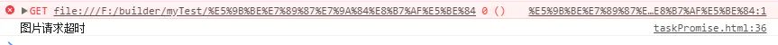
好了，我相信大家对用法已经懂了，那么我们来手写一款自己的promise吧
如何实现一个Promise (Promise A+)
步骤一：实现成功和失败的回调方法
要实现上面代码中的功能，也是promise最基本的功能。首先，需要创建一个构造函数promise，创建一个promisel类，在使用的时候传入了一个执行器executor，executor会传入两个参数：成功(resolve)和失败(reject)。之前说过，只要成功，就不会失败，只要失败就不会成功。所以，默认状态下，在调用成功时，就返回成功态，调用失败时，返回失败态。代码如下：
class Promise {
constructor (executor){
//默认状态是等待状态
this.status = 'panding';
this.value = undefined;
this.reason = undefined;
//存放成功的回调
this.onResolvedCallbacks = [];
//存放失败的回调
this.onRejectedCallbacks = [];
let resolve = (data) => {//this指的是实例
if(this.status === 'pending'){
this.value = data;
this.status = "resolved";
this.onResolvedCallbacks.forEach(fn => fn());
}
}
let reject = (reason) => {
if(this.status === 'pending'){
this.reason = reason;
this.status = 'rejected';
this.onRejectedCallbacks.forEach(fn => fn());
}
}
try{//执行时可能会发生异常
executor(resolve,reject);
}catch (e){
reject(e);//promise失败了
}
}promise A+规范规定，在有异常错误时，则执行失败函数。
constructor (executor){
...... try{
executor(resolve,reject);
}catch(e){
reject(e);
}
}步骤二：then方法链式调用
then方法是promise的最基本的方法，返回的是两个回调，一个成功的回调，一个失败的回调，实现过程如下：
then(onFulFilled, onRejected) {
if (this.status === 'resolved') { //成功状态的回调
onFulFilled(this.value);
}
if (this.status === 'rejected') {//失败状态的回调
onRejected(this.reason);
}
}let p = new Promise(function(){
resolve('我是成功');
})
p.then((data) => {console.log(data);},(err) => {});
p.then((data) => {console.log(data);},(err) => {});
p.then((data) => {console.log(data);},(err) => {});返回的结果是：
我是成功
我是成功
我是成功
为了实现这样的效果，则上一次的代码将要重新写过，我们可以把每次调用resolve的结果存入一个数组中，每次调用reject的结果存入一个数组。这就是为何会在上面定义两个数组,且分别在resolve()和reject()遍历两个数组的原因。因此，在调用resolve()或者reject()之前，我们在pending状态时，会把多次then中的结果存入数组中，则上面的代码会改变为：
then(onFulFilled, onRejected) {
if (this.status === 'resolved') {
onFulFilled(this.value);
}
if (this.status === 'rejected') {
onRejected(this.reason);
}
// 当前既没有完成 也没有失败
if (this.status === 'pending') {
// 存放成功的回调
this.onResolvedCallbacks.push(() => {
onFulFilled(this.value);
});
// 存放失败的回调
this.onRejectedCallbacks.push(() => {
onRejected(this.reason);
});
}
}在promise中，要实现链式调用返回的结果是返回一个新的promise，第一次then中返回的结果，无论是成功或失败，都将返回到下一次then中的成功态中，但在第一次then中如果抛出异常错误，则将返回到下一次then中的失败态中链式调用成功时链式调用成功会返回值，有多种情况，根据举的例子，大致列出可能会发生的结果。因此将链式调用返回的值单独写一个方法。方法中传入四个参数，分别是p2,x,resolve,reject,p2指的是上一次返回的promise，x表示运行promise返回的结果，resolve和reject是p2的方法。则代码写为：
function resolvePromise(p2,x,resolve,reject){
....
}返回结果不能是自己
var p = new Promise((resovle,reject) => {
return p; //返回的结果不能是自己，
})当返回结果是自己时，永远也不会成功或失败，因此当返回自己时，应抛出一个错误
function resolvePromise(p2,x,resolve,reject){
if(px===x){
return reject(new TypeError('自己引用自己了'));
}
....
}返回结果可能是promise
function resolvePromise(promise2,x,resolve,reject){
//判断x是不是promise
//规范中规定：我们允许别人乱写，这个代码可以实现我们的promise和别人的promise 进行交互
if(promise2 === x){//不能自己等待自己完成
return reject(new TypeError('循环引用'));
};
// x是除了null以外的对象或者函数
if(x !=null && (typeof x === 'object' || typeof x === 'function')){
let called;//防止成功后调用失败
try{//防止取then是出现异常 object.defineProperty
let then = x.then;//取x的then方法 {then:{}}
if(typeof then === 'function'){//如果then是函数就认为他是promise
//call第一个参数是this，后面的是成功的回调和失败的回调
then.call(x,y => {//如果Y是promise就继续递归promise
if(called) return;
called = true;
resolvePromise(promise2,y,resolve,reject)
},r => { //只要失败了就失败了
if(called) return;
called = true;
reject(r);
});
}else{//then是一个普通对象，就直接成功即可
resolve(x);
}
}catch (e){
if(called) return;
called = true;
reject(e)
}
}else{//x = 123 x就是一个普通值 作为下个then成功的参数
resolve(x)
}
}返回结果可能为一个普通值，则直接 resolve(x);
Promise一次只能调用成功或者失败
也就是当调用成功就不能再调用失败了，如果两个都调用的时候，哪个先调用就执行哪一个。代码部分还是上面那部分个人认为，这个地方比较绕，需要慢慢的一步一步的理清楚。根据promise A+规范原理，promise在自己的框架中，封装了一系列的内置的方法。
捕获错误的方法 catch()
解析全部方法 all()
竞赛 race()
生成一个成功的promise resolve()
生成一个失败的promise reject()最后给大家附上全部源码，供大家仔细品读。
function resolvePromise(promise2,x,resolve,reject){
//判断x是不是promise
//规范中规定：我们允许别人乱写，这个代码可以实现我们的promise和别人的promise 进行交互
if(promise2 === x){//不能自己等待自己完成
return reject(new TypeError('循环引用'));
};
// x是除了null以外的对象或者函数
if(x !=null && (typeof x === 'object' || typeof x === 'function')){
let called;//防止成功后调用失败
try{//防止取then是出现异常 object.defineProperty
let then = x.then;//取x的then方法 {then:{}}
if(typeof then === 'function'){//如果then是函数就认为他是promise
//call第一个参数是this，后面的是成功的回调和失败的回调
then.call(x,y => {//如果Y是promise就继续递归promise
if(called) return;
called = true;
resolvePromise(promise2,y,resolve,reject)
},r => { //只要失败了就失败了
if(called) return;
called = true;
reject(r);
});
}else{//then是一个普通对象，就直接成功即可
resolve(x);
}
}catch (e){
if(called) return;
called = true;
reject(e)
}
}else{//x = 123 x就是一个普通值 作为下个then成功的参数
resolve(x)
}
}
class Promise {
constructor (executor){
//默认状态是等待状态
this.status = 'panding';
this.value = undefined;
this.reason = undefined;
//存放成功的回调
this.onResolvedCallbacks = [];
//存放失败的回调
this.onRejectedCallbacks = [];
let resolve = (data) => {//this指的是实例
if(this.status === 'pending'){
this.value = data;
this.status = "resolved";
this.onResolvedCallbacks.forEach(fn => fn());
}
}
let reject = (reason) => {
if(this.status === 'pending'){
this.reason = reason;
this.status = 'rejected';
this.onRejectedCallbacks.forEach(fn => fn());
}
}
try{//执行时可能会发生异常
executor(resolve,reject);
}catch (e){
reject(e);//promise失败了
}
}
then(onFuiFilled,onRejected){
//防止值得穿透
onFuiFilled = typeof onFuiFilled === 'function' ? onFuiFilled : y => y;
onRejected = typeof onRejected === 'function' ? onRejected :err => {throw err;}
let promise2;//作为下一次then方法的promise
if(this.status === 'resolved'){
promise2 = new Promise((resolve,reject) => {
setTimeout(() => {
try{
//成功的逻辑 失败的逻辑
let x = onFuiFilled(this.value);
//看x是不是promise 如果是promise取他的结果 作为promise2成功的的结果
//如果返回一个普通值，作为promise2成功的结果
//resolvePromise可以解析x和promise2之间的关系
//在resolvePromise中传入四个参数，第一个是返回的promise，第二个是返回的结果，第三个和第四个分别是resolve()和reject()的方法。
resolvePromise(promise2,x,resolve,reject)
}catch(e){
reject(e);
}
},0)
});
}
if(this.status === 'rejected'){
promise2 = new Promise((resolve,reject) => {
setTimeout(() => {
try{
let x = onRejected(this.reason);
//在resolvePromise中传入四个参数，第一个是返回的promise，第二个是返回的结果，第三个和第四个分别是resolve()和reject()的方法。
resolvePromise(promise2,x,resolve,reject)
}catch(e){
reject(e);
}
},0)
});
}
//当前既没有完成也没有失败
if(this.status === 'pending'){
promise2 = new Promise((resolve,reject) => {
//把成功的函数一个个存放到成功回调函数数组中
this.onResolvedCallbacks.push( () =>{
setTimeout(() => {
try{
let x = onFuiFilled(this.value);
resolvePromise(promise2,x,resolve,reject);
}catch(e){
reject(e);
}
},0)
});
//把失败的函数一个个存放到失败回调函数数组中
this.onRejectedCallbacks.push( ()=>{
setTimeout(() => {
try{
let x = onRejected(this.reason);
resolvePromise(promise2,x,resolve,reject)
}catch(e){
reject(e)
}
},0)
})
})
}
return promise2;//调用then后返回一个新的promise
}
catch (onRejected) {
// catch 方法就是then方法没有成功的简写
return this.then(null, onRejected);
}
}
Promise.all = function (promises) {
//promises是一个promise的数组
return new Promise(function (resolve, reject) {
let arr = []; //arr是最终返回值的结果
let i = 0; // 表示成功了多少次
function processData(index, data) {
arr[index] = data;
if (++i === promises.length) {
resolve(arr);
}
}
for (let i = 0; i < promises.length; i++) {
promises[i].then(function (data) {
processData(i, data)
}, reject)
}
})
}
// 只要有一个promise成功了 就算成功。如果第一个失败了就失败了
Promise.race = function (promises) {
return new Promise((resolve, reject) => {
for (var i = 0; i < promises.length; i++) {
promises[i].then(resolve,reject)
}
})
}
// 生成一个成功的promise
Promise.resolve = function(value){
return new Promise((resolve,reject) => resolve(value);
}
// 生成一个失败的promise
Promise.reject = function(reason){
return new Promise((resolve,reject) => reject(reason));
}
Promise.defer = Promise.deferred = function () {
let dfd = {};
dfd.promise = new Promise( (resolve, reject) => {
dfd.resolve = resolve;
dfd.reject = reject;
});
return dfd
}
module.exports = Promise;async await
async和await是generator语法糖
async用于声明一个function是异步的，不管function是普通函数还是异步函数，通过async修饰之后，返回的都是一个promise对象；而 await 用于等待一个异步方法执行完成。await只能出现在async函数中或者 let value = await promise这种在环境的顶层作用域中使用，比如在window作用顶层函数中可以使用; 但是await可以用来修饰任何函数，通过await修饰的任何函数，表示等待该行数执行之后再往后执行，表明是一个同步的过程。
1.5 深浅拷贝
介绍下javaScript的深浅拷贝
JavaScript存储对象都是存地址的，所以浅拷贝会导致 obj1 和obj2 指向同一块内存地址。改变了其中一方的内容，都是在原来的内存上做修改会导致拷贝对象和源对象都发生改变，而深拷贝是开辟一块新的内存地址，将原对象的各个属性逐个复制进去。对拷贝对象和源对象各自的操作互不影响。
如何实现浅拷贝
1. 简单的引用复制
function shallowClone(copyObj) {
var obj = {};
for ( var i in copyObj) {
obj[i] = copyObj[i];
}
return obj;
}
var x = {
a: 1,
b: { f: { g: 1 } },
c: [ 1, 2, 3 ]
};
var y = shallowClone(x);
console.log(y.b.f === x.b.f); // true2. Object.assign()
Object.assign() 方法可以把任意多个的源对象自身的可枚举属性拷贝给目标对象，然后返回目标对象。
var x = {
a: 1,
b: { f: { g: 1 } },
c: [ 1, 2, 3 ]
};
var y = Object.assign({}, x);
console.log(y.b.f === x.b.f); // true如何实现深拷贝
1、Array的slice和concat方法 看起来像深拷贝实际是浅拷贝
var array = [1,2,3];
var array_shallow = array;
var array_concat = array.concat();
var array_slice = array.slice(0);
console.log(array === array_shallow); //true
console.log(array === array_slice); //false，“看起来”像深拷贝
console.log(array === array_concat); //false，“看起来”像深拷贝2、JSON对象的parse和stringify 懒人专用(正则 函数类型无法拷贝)
//例1
var source = { name:"source", child:{ name:"child" } }
var target = JSON.parse(JSON.stringify(source));
target.name = "target"; //改变target的name属性
console.log(source.name); //source
console.log(target.name); //target
target.child.name = "target child"; //改变target的child
console.log(source.child.name); //child
console.log(target.child.name); //target child
//例2
var source = { name:function(){console.log(1);}, child:{ name:"child" } }
var target = JSON.parse(JSON.stringify(source));
console.log(target.name); //undefined
//例3
var source = { name:function(){console.log(1);}, child:new RegExp("e") }
var target = JSON.parse(JSON.stringify(source));
console.log(target.name); //undefined
console.log(target.child); //Object {}3、jQuery.extend()方法源码实现
var array = [1,2,3,4];
var newArray = $.extend(true,[],array);4、lodash函数库实现深拷贝
lodash很热门的函数库，提供了 lodash.cloneDeep()实现深拷贝
5、Object.assign()拷贝
当对象中只有一级属性，没有二级属性的时候，此方法为深拷贝，但是对象中有对象的时候，此方法，在二级属性以后就是浅拷贝。
6、自己实现
const typeObject = '[object Object]';
const typeArray = '[object Array]';
// 是否是引用类型
const isObject = (target) => {
return typeof target === 'object';
};
// 获取标准类型
const getType = (target) => {
return Object.prototype.toString.call(target);
};
const clone = (target, map = new Map()) => {
// 处理原始类型直接返回(Number BigInt String Boolean Symbol Undefined Null)
if (!isObject(target)) {
return target;
}
const type = getType(target);
// 用于返回
let cloneTarget;
// 处理循环引用
if (map.get(target)) {
// 已经放入过map的直接返回
return map.get(target)
}
switch (type) {
case typeArray:
// 数组
cloneTarget = [];
map.set(target, cloneTarget);
target.forEach((item, index) => {
cloneTarget[index] = clone(item, map)
});
return cloneTarget;
case typeObject:
// 对象
cloneTarget = {};
map.set(target, cloneTarget);
Object.keys(target).forEach((item) => {
cloneTarget[item] = clone(target[item], map)
});
return cloneTarget;
default:
return target;
}
return cloneTarget
}实现深拷贝需要注意哪些问题
1. 使用Object.assign(newObj, oldObj)；
只深拷贝了oldObj的第一层，之后的层级仍是浅拷贝。
如：oldObj = {a:1, b: 2}; 此时深拷贝没问题
如：oldObj = {a:1, b: { c: 4 }}; 此时newObj.a和newObj.b都不会影响oldObj，但newObj.b.c则会影响oldObj。
当对象中只有一级属性，没有二级属性的时候，此方法为深拷贝，但是对象中有对象的时候，此方法，在二级属性以后就是浅拷贝。
2. 使用“…”扩展运算符，细节同上
当对象中只有一级属性，没有二级属性的时候，此方法为深拷贝，但是对象中有对象的时候，此方法，在二级属性以后就是浅拷贝。
3. 使用JSON.parse(JSON.stringify(oldObj))；
对象内的值为undefined、function、symbol时，会丢失。
如何解决循环引用的问题
递归
function deepCopy1(obj) {
// 创建一个新对象
let result = {}
let keys = Object.keys(obj),
key = null,
temp = null;
for (let i = 0; i < keys.length; i++) {
key = keys[i];
temp = obj[key];
// 如果字段的值也是一个对象则递归操作
if (temp && typeof temp === 'object') {
result[key] = deepCopy(temp);
} else {
// 否则直接赋值给新对象
result[key] = temp;
}
}
return result;
}
const obj1 = {
x: {
m: 1
},
y: undefined,
z: function add(z1, z2) {
return z1 + z2
},
a: Symbol("foo")
};
const obj2 = deepCopy1(obj1);
obj2.x.m = 2;
console.log(obj1); //{x: {m: 1}, y: undefined, z: ƒ, a: Symbol(foo)}
console.log(obj2); //{x: {m: 2}, y: undefined, z: ƒ, a: Symbol(foo)}这里的父级引用指的是，当对象的某个属性，正是这个对象本身，此时我们如果进行深拷贝，可能会在子元素->父对象->子元素… 这个循环中一直进行，导致栈溢出。比如下面这个例子：
const obj1 = {
x: 1,
y: 2
};
obj1.z = obj1;
const obj2 = deepCopy1(obj1); \\栈溢出解决办法是: 只需要判断一个对象的字段是否引用了这个对象或这个对象的任意父级即可，可以修改上面的deepCopy1函数:
function deepCopy2(obj, parent=null) {
//创建一个新对象
let result = {};
let keys = Object.keys(obj),
key = null,
temp = null,
_parent = parent;
//该字段有父级则需要追溯该字段的父级
while(_parent) {
//如果该字段引用了它的父级，则为循环引用
if(_parent.originParent === obj) {
//循环引用返回同级的新对象
return _parent.currentParent;
}
_parent = _parent.parent
}
for(let i=0,len=keys.length;i<len;i++) {
key = keys[i]
temp = obj[key]
// 如果字段的值也是一个新对象
if(temp && typeof temp === 'object') {
result[key] = deepCopy(temp, {
//递归执行深拷贝，将同级的待拷贝对象与新对象传递给parent，方便追溯循环引用
originParent: obj,
currentParent: result,
parent: parent
});
} else {
result[key] = temp;
}
}
return result;
}
const obj1 = {
x:1
}
obj1.z = obj1;
const obj2 = deepCopy2(obj1);1.6 事件机制/Event Loop
如何实现一个事件的发布订阅
class EventEmitter {
constructor() {
// 维护事件及监听者
this.listeners = {}
}
/**
* 注册事件监听者
* @param {String} type 事件类型
* @param {Function} cb 回调函数
*/
on(type, cb) {
if (!this.listeners[type]) {
this.listeners[type] = []
}
this.listeners[type].push(cb)
}
/**
* 发布事件
* @param {String} type 事件类型
* @param {...any} args 参数列表，把emit传递的参数赋给回调函数
*/
emit(type, ...args) {
if (this.listeners[type]) {
this.listeners[type].forEach(cb => {
cb(...args)
})
}
}
/**
* 移除某个事件的一个监听者
* @param {String} type 事件类型
* @param {Function} cb 回调函数
*/
off(type, cb) {
if (this.listeners[type]) {
const targetIndex = this.listeners[type].findIndex(item => item === cb)
if (targetIndex !== -1) {
this.listeners[type].splice(targetIndex, 1)
}
if (this.listeners[type].length === 0) {
delete this.listeners[type]
}
}
}
/**
* 移除某个事件的所有监听者
* @param {String} type 事件类型
*/
offAll(type) {
if (this.listeners[type]) {
delete this.listeners[type]
}
}
}
// 创建事件管理器实例
const ee = new EventEmitter()
// 注册一个chifan事件监听者
ee.on('chifan', function() { console.log('吃饭了，我们走！') })
// 发布事件chifan
ee.emit('chifan')
// 也可以emit传递参数
ee.on('chifan', function(address, food) { console.log(`吃饭了，我们去${address}吃${food}！`) })
ee.emit('chifan', '三食堂', '铁板饭') // 此时会打印两条信息，因为前面注册了两个chifan事件的监听者
// 测试移除事件监听
const toBeRemovedListener = function() { console.log('我是一个可以被移除的监听者') }
ee.on('testoff', toBeRemovedListener)
ee.emit('testoff')
ee.off('testoff', toBeRemovedListener)
ee.emit('testoff') // 此时事件监听已经被移除，不会再有console.log打印出来了
// 测试移除chifan的所有事件监听
ee.offAll('chifan')
console.log(ee) // 此时可以看到ee.listeners已经变成空对象了，再emit发送chifan事件也不会有反应了画图分析
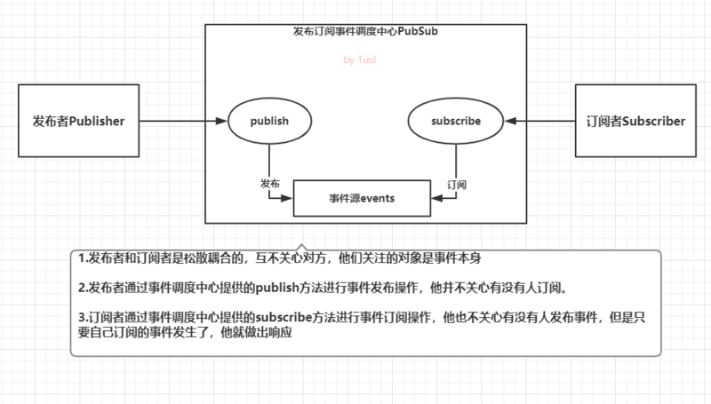
特点
发布订阅模式中，对于发布者Publisher和订阅者Subscriber没有特殊的约束，他们好似是匿名活动，借助事件调度中心提供的接口发布和订阅事件，互不了解对方是谁。
松散耦合，灵活度高，常用作事件总线
易理解，可类比于DOM事件中的dispatchEvent和addEventListener。
缺点
当事件类型越来越多时，难以维护，需要考虑事件命名的规范，也要防范数据流混乱。
观察者模式
观察者模式与发布订阅模式相比，耦合度更高，通常用来实现一些响应式的效果。在观察者模式中，只有两个主体，分别是目标对象Subject，观察者Observer。
观察者需Observer要实现update方法，供目标对象调用。update方法中可以执行自定义的业务代码。
目标对象Subject也通常被叫做被观察者或主题，它的职能很单一，可以理解为，它只管理一种事件。Subject需要维护自身的观察者数组observerList，当自身发生变化时，通过调用自身的notify方法，依次通知每一个观察者执行update方法。
按照这种定义，我们可以实现一个简单版本的观察者模式。
// 观察者
class Observer {
/**
* 构造器
* @param {Function} cb 回调函数，收到目标对象通知时执行
*/
constructor(cb){
if (typeof cb === 'function') {
this.cb = cb
} else {
throw new Error('Observer构造器必须传入函数类型！')
}
}
/**
* 被目标对象通知时执行
*/
update() {
this.cb()
}
}
// 目标对象
class Subject {
constructor() {
// 维护观察者列表
this.observerList = []
}
/**
* 添加一个观察者
* @param {Observer} observer Observer实例
*/
addObserver(observer) {
this.observerList.push(observer)
}
/**
* 通知所有的观察者
*/
notify() {
this.observerList.forEach(observer => {
observer.update()
})
}
}
const observerCallback = function() {
console.log('我被通知了')
}
const observer = new Observer(observerCallback)
const subject = new Subject();
subject.addObserver(observer);
subject.notify();画图分析
最后也整张图理解下观察者模式：
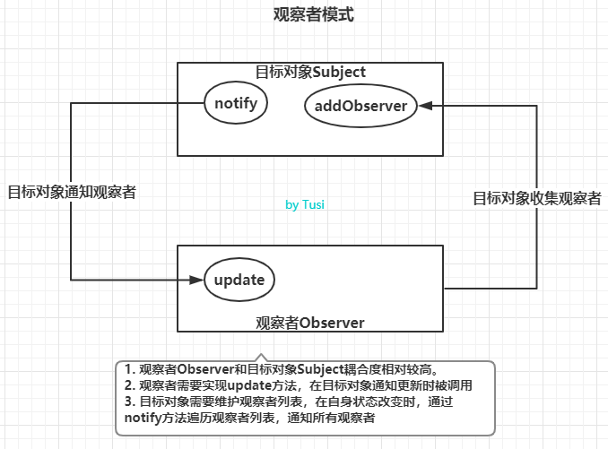
特点
角色很明确，没有事件调度中心作为中间者，目标对象Subject和观察者Observer都要实现约定的成员方法。
双方联系更紧密，目标对象的主动性很强，自己收集和维护观察者，并在状态变化时主动通知观察者更新。
JavaScript 执行机制
执行 & 运行
首先我们需要声明下，JavaScript 的执行和运行是两个不同概念的，执行，一般依赖于环境，比如 node、浏览器、Ringo 等， JavaScript 在不同环境下的执行机制可能并不相同。而今天我们要讨论的 Event Loop 就是 JavaScript 的一种执行方式。所以下文我们还会梳理 node 的执行方式。而运行呢，是指JavaScript 的解析引擎。这是统一的。
关于 JavaScript
此篇文章中，这个小标题下，我们只需要牢记一句话: JavaScript 是单线程语言 ，无论HTML5 里面 Web-Worker 还是 node 里面的cluster都是“纸老虎”，而且 cluster 还是进程管理相关。这里读者注意区分：进程和线程。
既然 JavaScript 是单线程语言，那么就会存在一个问题，所有的代码都得一句一句的来执行。就像我们在食堂排队打饭，必须一个一个排队点菜结账。那些没有排到的，就得等着~
概念梳理
在详解执行机制之前，先梳理一下 JavaScript 的一些基本概念，方便后面我们说到的时候大伙儿心里有个印象和大概的轮廓。
事件循环(Event Loop)
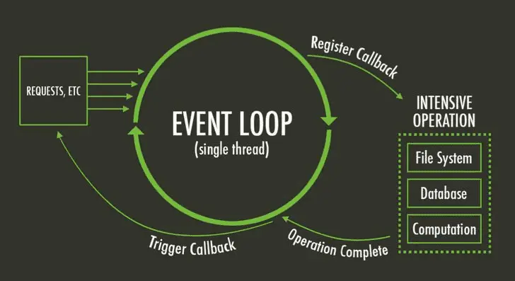
什么是 Event Loop？
其实这个概念还是比较模糊的，因为他必须得结合着运行机制来解释。
JavaScript 有一个主线程 main thread，和调用栈 call-stack 也称之为执行栈。所有的任务都会放到调用栈中等待主线程来执行。
暂且，我们先理解为上图的大圈圈就是 Event Loop 吧！并且，这个圈圈，一直在转圈圈~ 也就是说，JavaScript 的 Event Loop 是伴随着整个源码文件生命周期的，只要当前 JavaScript 在运行中，内部的这个循环就会不断地循环下去，去寻找 queue 里面能执行的 task。
任务队列(task queue)
task，就是任务的意思，我们这里理解为每一个语句就是一个任务
console.log(1);
console.log(2);如上语句，其实就是就可以理解为两个 task。
而 queue 呢，就是FIFO的队列！
所以 Task Queue 就是承载任务的队列。而 JavaScript 的 Event Loop 就是会不断地过来找这个 queue，问有没有 task 可以运行运行。
同步任务(SyncTask)、异步任务(AsyncTask)
同步任务说白了就是主线程来执行的时候立即就能执行的代码，比如:
console.log('this is THE LAST TIME');
console.log('Nealyang');代码在执行到上述 console 的时候，就会立即在控制台上打印相应结果。
而所谓的异步任务就是主线程执行到这个 task 的时候，“唉！你等会，我现在先不执行，等我 xxx 完了以后我再来等你执行” 注意上述我说的是等你来执行。
说白了，异步任务就是你先去执行别的 task，等我这 xxx 完之后再往 Task Queue 里面塞一个 task 的同步任务来等待被执行
setTimeout(()=>{
console.log(2)
});
console.log(1);如上述代码，setTimeout 就是一个异步任务，主线程去执行的时候遇到 setTimeout 发现是一个异步任务，就先注册了一个异步的回调，然后接着执行下面的语句console.log(1),等上面的异步任务等待的时间到了以后，在执行console.log(2)。具体的执行机制会在后面剖析。
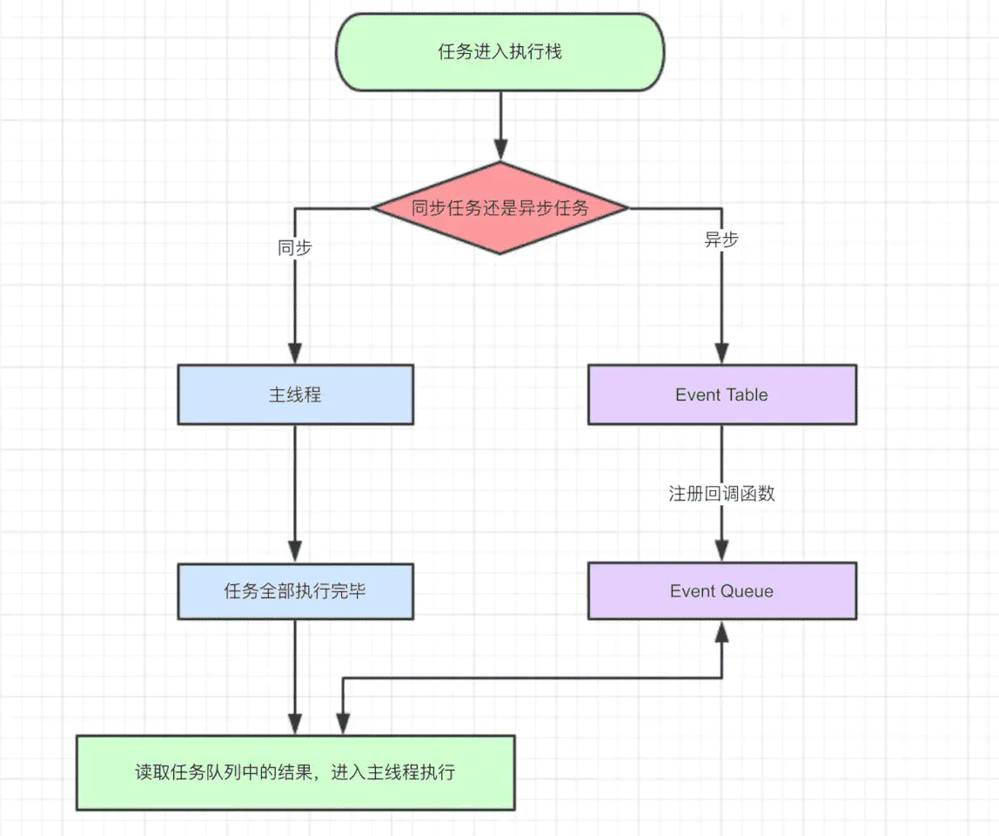
主线程自上而下执行所有代码
同步任务直接进入到主线程被执行，而异步任务则进入到 Event Table 并注册相对应的回调函数
异步任务完成后，Event Table 会将这个函数移入 Event Queue
主线程任务执行完了以后，会从Event Queue中读取任务，进入到主线程去执行。
循环如上
上述动作不断循环，就是我们所说的事件循环(Event Loop)。
小试牛刀
ajax({
url:www.Nealyang.com,
data:prams,
success:() => {
console.log('请求成功!');
},
error:()=>{
console.log('请求失败~');
}
})
console.log('这是一个同步任务');ajax 请求首先进入到 Event Table ，分别注册了onError和onSuccess回调函数。
主线程执行同步任务：console.log(‘这是一个同步任务’);
主线程任务执行完毕，看Event Queue是否有待执行的 task,这里是不断地检查，只要主线程的task queue没有任务执行了，主线程就一直在这等着
ajax 执行完毕，将回调函数push 到Event Queue。（步骤 3、4 没有先后顺序而言）
主线程“终于”等到了Event Queue里有 task可以执行了，执行对应的回调任务。
如此往复。
宏任务(MacroTask)、微任务(MicroTask)
JavaScript 的任务不仅仅分为同步任务和异步任务，同时从另一个维度，也分为了宏任务(MacroTask)和微任务(MicroTask)。
先说说 MacroTask，所有的同步任务代码都是MacroTask（这么说其实不是很严谨，下面解释）,setTimeout、setInterval、I/O、UI Rendering 等都是宏任务。
MicroTask，为什么说上述不严谨我却还是强调所有的同步任务都是 MacroTask 呢，因为我们仅仅需要记住几个 MicroTask 即可，排除法！别的都是 MacroTask。MicroTask 包括：Process.nextTick、Promise.then catch finally(注意我不是说 Promise)、MutationObserver。
浏览器环境下的 Event Loop
当我们梳理完哪些是 MicroTask ，除了那些别的都是 MacroTask 后，哪些是同步任务，哪些又是异步任务后，这里就应该彻底的梳理下JavaScript 的执行机制了。
如开篇说到的，执行和运行是不同的，执行要区分环境。所以这里我们将 Event Loop 的介绍分为浏览器和 Node 两个环境下。
先放图镇楼！如果你已经理解了这张图的意思，那么恭喜你，你完全可以直接阅读 Node 环境下的 Event Loop 章节了！
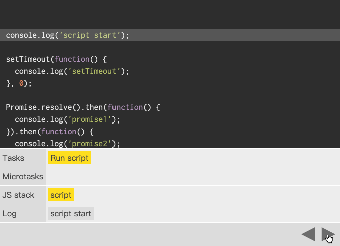
setTimeout
setTimeout 就是等多长时间来执行这个回调函数。setInterval 就是每隔多长时间来执行这个回调。
let startTime = new Date().getTime();
setTimeout(()=>{
console.log(new Date().getTime()-startTime);
},1000);如上代码，顾名思义，就是等 1s 后再去执行 console。放到浏览器下去执行，OK，如你所愿就是如此。
但是这次我们在探讨 JavaScript 的执行机制，所以这里我们得探讨下如下代码：
let startTime = new Date().getTime();
console.log({startTime})
setTimeout(()=>{
console.log(`开始执行回调的相隔时差：${new Date().getTime()-startTime}`);
},1000);
for(let i = 0;i<40000;i++){
console.log(1)
}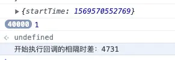
如上运行，setTimeout 的回调函数等到 4.7s 以后才执行!而这时候，我们把 setTimeout 的 1s 延迟给删了：
let startTime = new Date().getTime();
console.log({startTime})
setTimeout(()=>{
console.log(`开始执行回调的相隔时差：${new Date().getTime()-startTime}`);
},0);
for(let i = 0;i<40000;i++){
console.log(1)
}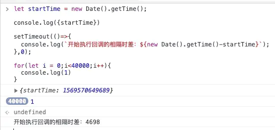
结果依然是等到 4.7s 后才执行setTimeout 的回调。貌似 setTimeout 后面的延迟并没有产生任何效果！
其实这么说，又应该回到上面的那张 JavaScript 执行的流程图了。
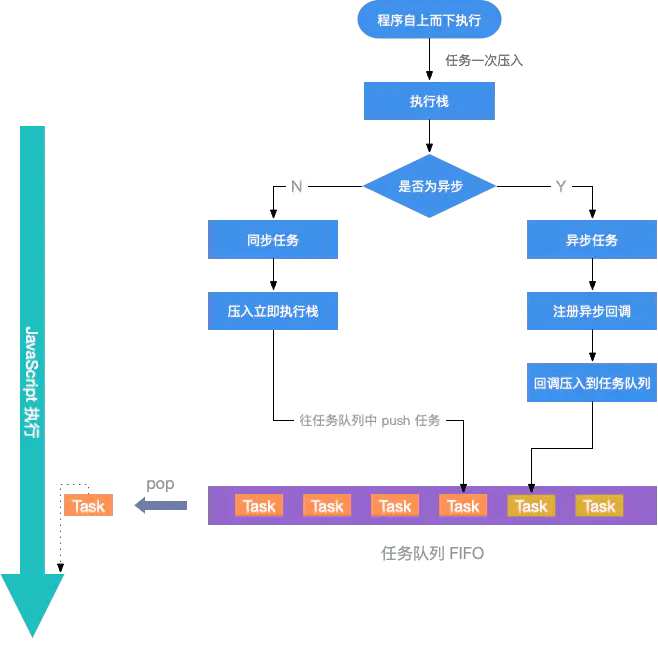
setTimeout这里就是简单的异步，我们通过上面的图来分析上述代码的一步一步执行情况
首先 JavaScript 自上而下执行代码
遇到遇到赋值语句、以及第一个 console.log({startTime}) 分别作为一个 task，压入到立即执行栈中被执行。
遇到 setTImeout 是一个异步任务，则注册相应回调函数。（异步函数告诉你，js 你先别急，等 1s 后我再将回调函数：console.log(xxx)放到 Task Queue 中）
OK，这时候 JavaScript 则接着往下走，遇到了 40000 个 for 循环的 task，没办法，1s 后都还没执行完。其实这个时候上述的回调已经在Task Queue 中了。
等所有的立即执行栈中的 task 都执行完了，在回头看 Task Queue 中的任务，发现异步的回调 task 已经在里面了，所以接着执行。
打个比方
其实上述的不仅仅是 timeout，而是任何异步，比如网络请求等。
就好比，我六点钟下班了，可以安排下自己的活动了!
然后收拾电脑(同步任务)、收拾书包(同步任务)、给女朋友打电话说出来吃饭吧(必然是异步任务)，然后女朋友说你等会，我先化个妆，等我画好了call你。
那我不能干等着呀，就接着做别的事情，比如那我就在改个 bug 吧，你好了通知我。结果等她一个小时后说我化好妆了，我们出去吃饭吧。不行！我 bug 还没有解决掉呢？你等会。。。。其实这个时候你的一小时化妆还是 5 分钟化妆都已经毫无意义了。。。因为哥哥这会没空~~
如果我 bug 在半个小时就解决完了，没别的任务需要执行了，那么就在这等着呀！必须等着！随时待命！。然后女朋友来电话了，我化完妆了，我们出去吃饭吧，那么刚好，我们在你的完成了请求或者 timeout 时间到了后我刚好闲着，那么我必须立即执行了。
setInterval
说完了 setTimeout，当然不能错过他的孪生兄弟：setInterval。对于执行顺序来说，setInterval会每隔指定的时间将注册的函数置入 Task Queue，如果前面的任务耗时太久，那么同样需要等待。
这里需要说的是，对于 setInterval(fn,ms) 来说，我们制定没 xx ms执行一次 fn，其实是没 xx ms，会有一个fn 进入到 Task Queue 中。一旦 setInterval 的回调函数fn执行时间超过了xx ms，那么就完全看不出来有时间间隔了。 仔细回味回味，是不是那么回事？
关于 Promise 的用法，这里就不过过多介绍了，后面会在写《【THE LAST TIME】彻底吃透 JavaScript 异步》 一文的时候详细介绍。这里我们只说 JavaScript 的执行机制。
如上所说，promise.then 、catch 和 finally 是属于 MicroTask。这里主要是异步的区分。展开说明之前，我们结合上述说的，再来“扭曲”梳理一下。
为了避免初学者这时候脑子有点混乱，我们暂时忘掉 JavaScript 异步任务！ 我们暂且称之为待会再执行的同步任务。
有了如上约束后，我们可以说，JavaScript 从一开始就自上而下的执行每一个语句(Task),这时候只能遇到立马就要执行的任务和待会再执行的任务。对于那待会再执行的任务等到能执行了，也不会立即执行，你得等js 执行完这一趟才行
再打个比方
就像做公交车一样，公交车不等人呀，公交车路线上有人就会停（农村公交！么得站牌），但是等公交车来，你跟司机说，我肚子疼要拉x~这时候公交不会等你。你只能拉完以后等公交下一趟再来（大山里！一个路线就一趟车）。
OK！你拉完了。。。等公交，公交也很快到了！但是，你不能立马上车，因为这时候前面有个孕妇！有个老人！还有熊孩子，你必须得让他们先上车，然后你才能上车！
而这些 孕妇、老人、熊孩子所组成的就是传说中的 MicroTask Queue,而且，就在你和你的同事、朋友就必须在他们后面上车。
这里我们没有异步的概念，只有同样的一次循环回来，有了两种队伍，一种优先上车的队伍叫做MicroTask Queue，而你和你的同事这帮壮汉组成的队伍就是宏队伍(MacroTask Queue)。
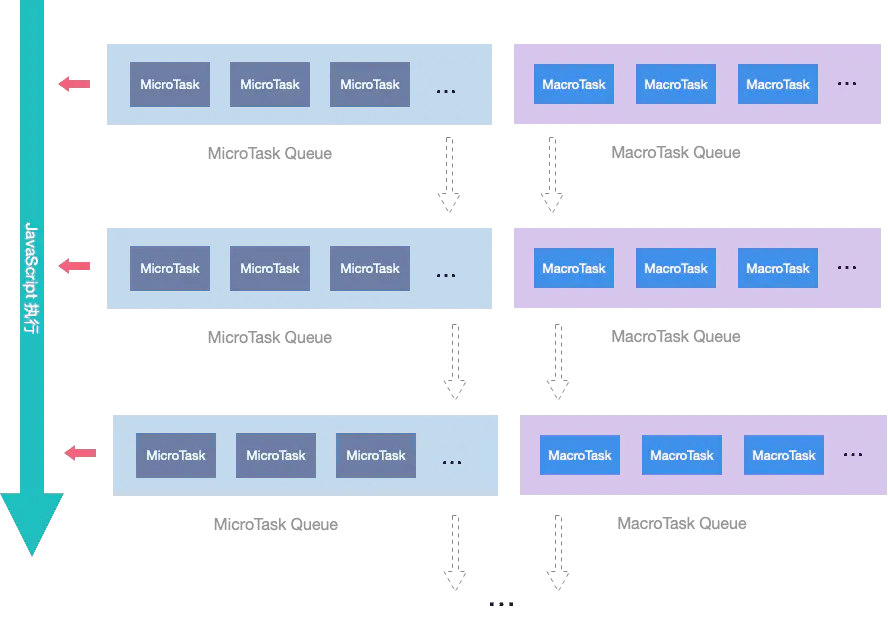
一句话理解：一次事件循环回来后，开始去执行 Task Queue 中的 task，但是这里的 task 有优先级。所以优先执行 MicroTask Queue 中的 task ，执行完后在执行MacroTask Queue 中的 task
Promise
关于 Promise 的用法，这里就不过过多介绍了，后面会在写《【THE LAST TIME】彻底吃透 JavaScript 异步》 一文的时候详细介绍。这里我们只说 JavaScript 的执行机制。
如上所说，promise.then 、catch 和 finally 是属于 MicroTask。这里主要是异步的区分。展开说明之前，我们结合上述说的，再来“扭曲”梳理一下。
为了避免初学者这时候脑子有点混乱，我们暂时忘掉 JavaScript 异步任务！ 我们暂且称之为待会再执行的同步任务。
有了如上约束后，我们可以说，JavaScript 从一开始就自上而下的执行每一个语句(Task),这时候只能遇到立马就要执行的任务和待会再执行的任务。对于那待会再执行的任务等到能执行了，也不会立即执行，你得等js 执行完这一趟才行
再打个比方
就像做公交车一样，公交车不等人呀，公交车路线上有人就会停（农村公交！么得站牌），但是等公交车来，你跟司机说，我肚子疼要拉x~这时候公交不会等你。你只能拉完以后等公交下一趟再来（大山里！一个路线就一趟车）。
OK！你拉完了。。。等公交，公交也很快到了！但是，你不能立马上车，因为这时候前面有个孕妇！有个老人！还有熊孩子，你必须得让他们先上车，然后你才能上车！
而这些 孕妇、老人、熊孩子所组成的就是传说中的 MicroTask Queue,而且，就在你和你的同事、朋友就必须在他们后面上车。
这里我们没有异步的概念，只有同样的一次循环回来，有了两种队伍，一种优先上车的队伍叫做MicroTask Queue，而你和你的同事这帮壮汉组成的队伍就是宏队伍(MacroTask Queue)。
一句话理解：一次事件循环回来后，开始去执行 Task Queue 中的 task，但是这里的 task 有优先级。所以优先执行 MicroTask Queue 中的 task ，执行完后在执行MacroTask Queue 中的 task
小试牛刀
理论都扯完了，也不知道你懂没懂。来，期中考试了！
console.log('script start');
setTimeout(function() {
console.log('setTimeout');
}, 0);
Promise.resolve().then(function() {
console.log('promise1');
}).then(function() {
console.log('promise2');
});
console.log('script end')Node 环境下的 Event Loop
Node中的Event Loop是基于libuv实现的，而libuv是 Node 的新跨平台抽象层，libuv使用异步，事件驱动的编程方式，核心是提供i/o的事件循环和异步回调。libuv的API包含有时间，非阻塞的网络，异步文件操作，子进程等等。
Event Loop就是在libuv中实现的。所以关于 Node 的 Event Loop学习，有两个官方途径可以学习:
libuv 文档
官网的What is the Event Loop?.
在学习 Node 环境下的 Event Loop 之前呢，我们首先要明确执行环境，Node 和浏览器的Event Loop是两个有明确区分的事物，不能混为一谈。nodejs的event是基于libuv，而浏览器的event loop则在html5的规范中明确定义。
┌───────────────────────────┐
┌─>│ timers │
│ └─────────────┬─────────────┘
│ ┌─────────────┴─────────────┐
│ │ pending callbacks │
│ └─────────────┬─────────────┘
│ ┌─────────────┴─────────────┐
│ │ idle, prepare │
│ └─────────────┬─────────────┘ ┌───────────────┐
│ ┌─────────────┴─────────────┐ │ incoming: │
│ │ poll │<─────┤ connections, │
│ └─────────────┬─────────────┘ │ data, etc. │
│ ┌─────────────┴─────────────┐ └───────────────┘
│ │ check │
│ └─────────────┬─────────────┘
│ ┌─────────────┴─────────────┐
└──┤ close callbacks │
└───────────────────────────┘Node 的 Event Loop 分为 6 个阶段：
timers 阶段
timers：执行setTimeout() 和 setInterval()中到期的callback。
pending callback: 上一轮循环中有少数的I/O callback会被延迟到这一轮的这一阶段执行
idle, prepare：仅内部使用
poll: 最为重要的阶段，执行I/O callback，在适当的条件下会阻塞在这个阶段
check: 执行setImmediate的callback
close callbacks: 执行close事件的callback，例如socket.on(‘close’[,fn])、http.server.on(‘close, fn)
上面六个阶段都不包括 process.nextTick()(下文会介绍)
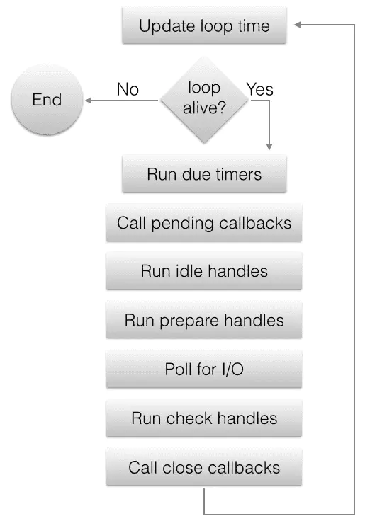
整体的执行机制如上图所示，下面我们具体展开每一个阶段的说明
timers 阶段会执行 setTimeout 和 setInterval 回调，并且是由 poll 阶段控制的。
在 timers 阶段其实使用一个最小堆而不是队列来保存所有的元素，其实也可以理解，因为timeout的callback是按照超时时间的顺序来调用的，并不是先进先出的队列逻辑）。而为什么 timer 阶段在第一个执行阶梯上其实也不难理解。在 Node 中定时器指定的时间也是不准确的，而这样，就能尽可能的准确了，让其回调函数尽快执行。
以下是官网给出的例子：
const fs = require('fs');
function someAsyncOperation(callback) {
// Assume this takes 95ms to complete
fs.readFile('/path/to/file', callback);
}
const timeoutScheduled = Date.now();
setTimeout(() => {
const delay = Date.now() - timeoutScheduled;
console.log(`${delay}ms have passed since I was scheduled`);
}, 100);
// do someAsyncOperation which takes 95 ms to complete
someAsyncOperation(() => {
const startCallback = Date.now();
// do something that will take 10ms...
while (Date.now() - startCallback < 10) {
// do nothing
}
});当进入事件循环时，它有一个空队列（fs.readFile()尚未完成），因此定时器将等待剩余毫秒数，当到达95ms时，fs.readFile()完成读取文件并且其完成需要10毫秒的回调被添加到轮询队列并执行。
当回调结束时，队列中不再有回调，因此事件循环将看到已达到最快定时器的阈值，然后回到timers阶段以执行定时器的回调。
在此示例中，您将看到正在调度的计时器与正在执行的回调之间的总延迟将为105毫秒。
pending callbacks 阶段
pending callbacks 阶段其实是 I/O 的 callbacks 阶段。比如一些 TCP 的 error 回调等。
举个栗子：如果TCP socket ECONNREFUSED在尝试connect时receives，则某些* nix系统希望等待报告错误。 这将在pending callbacks阶段执行。
poll 阶段
poll 阶段主要有两个功能：
执行 I/O 回调
处理 poll 队列（poll queue）中的事件
当时Event Loop 进入到 poll 阶段并且 timers 阶段没有任何可执行的 task 的时候（也就是没有定时器回调），将会有以下两种情况
如果 poll queue 非空，则 Event Loop就会执行他们，知道为空或者达到system-dependent(系统相关限制)
如果 poll queue 为空，则会发生以下一种情况
如果setImmediate()有回调需要执行，则会立即进入到 check 阶段
相反，如果没有setImmediate()需要执行，则 poll 阶段将等待 callback 被添加到队列中再立即执行，这也是为什么我们说 poll 阶段可能会阻塞的原因。
一旦 poll queue 为空，Event Loop就回去检查timer 阶段的任务。如果有的话，则会回到 timer 阶段执行回调。
check 阶段
check 阶段在 poll 阶段之后，setImmediate()的回调会被加入check队列中，他是一个使用libuv API 的特殊的计数器。
通常在代码执行的时候，Event Loop 最终会到达 poll 阶段，然后等待传入的链接或者请求等，但是如果已经指定了setImmediate()并且这时候 poll 阶段已经空闲的时候，则 poll 阶段将会被中止然后开始 check 阶段的执行
close callbacks 阶段
如果一个 socket 或者事件处理函数突然关闭/中断(比如：socket.destroy()),则这个阶段就会发生 close 的回调执行。否则他会通过 process.nextTick() 发出。
setImmediate() vs setTimeout()
setImmediate() 和 setTimeout()非常的相似，区别取决于谁调用了它。
setImmediate在 poll 阶段后执行，即check 阶段
setTimeout 在 poll 空闲时且设定时间到达的时候执行，在 timer 阶段
计时器的执行顺序将根据调用它们的上下文而有所不同。 如果两者都是从主模块中调用的，则时序将受到进程性能的限制。
例如，如果我们运行以下不在I / O周期（即主模块）内的脚本，则两个计时器的执行顺序是不确定的，因为它受进程性能的约束：
// timeout_vs_immediate.js
setTimeout(() => {
console.log('timeout');
}, 0);
setImmediate(() => {
console.log('immediate');
});$ node timeout_vs_immediate.js
timeout
immediate
$ node timeout_vs_immediate.js
immediate
timeout如果在一个I/O 周期内移动这两个调用，则始终首先执行立即回调：
// timeout_vs_immediate.js
const fs = require('fs');
fs.readFile(__filename, () => {
setTimeout(() => {
console.log('timeout');
}, 0);
setImmediate(() => {
console.log('immediate');
});
});$ node timeout_vs_immediate.js
immediate
timeout
$ node timeout_vs_immediate.js
immediate
timeout所以与setTimeout（）相比，使用setImmediate（）的主要优点是，如果在I / O周期内安排了任何计时器，则setImmediate（）将始终在任何计时器之前执行，而与存在多少计时器无关。
nextTick queue
可能你已经注意到process.nextTick（）并未显示在图中，即使它是异步API的一部分。 所以他拥有一个自己的队列：nextTickQueue。
这是因为process.nextTick（）从技术上讲不是Event Loop的一部分。 相反，无论当前事件循环的当前阶段如何，都将在当前操作完成之后处理nextTickQueue。
如果存在 nextTickQueue，就会清空队列中的所有回调函数，并且优先于其他 microtask 执行。
setTimeout(() => {
console.log('timer1')
Promise.resolve().then(function() {
console.log('promise1')
})
}, 0)
process.nextTick(() => {
console.log('nextTick')
process.nextTick(() => {
console.log('nextTick')
process.nextTick(() => {
console.log('nextTick')
process.nextTick(() => {
console.log('nextTick')
})
})
})
})
// nextTick=>nextTick=>nextTick=>nextTick=>timer1=>promise1process.nextTick() vs setImmediate()
从使用者角度而言，这两个名称非常的容易让人感觉到困惑。
process.nextTick（）在同一阶段立即触发
setImmediate（）在事件循环的以下迭代或“tick”中触发
貌似这两个名称应该呼唤下！的确~官方也这么认为。但是他们说这是历史包袱，已经不会更改了。
这里还是建议大家尽可能使用setImmediate。因为更加的让程序可控容易推理。
至于为什么还是需要 process.nextTick，存在即合理。这里建议大家阅读官方文档：why-use-process-nexttick。
Node与浏览器的 Event Loop 差异
一句话总结其中：浏览器环境下，microtask的任务队列是每个macrotask执行完之后执行。而在Node.js中，microtask会在事件循环的各个阶段之间执行，也就是一个阶段执行完毕，就会去执行microtask队列的任务。
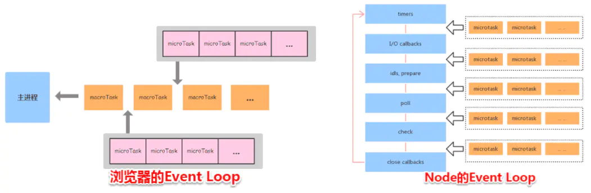
console.log('1');
setTimeout(function() {
console.log('2');
process.nextTick(function() {
console.log('3');
})
new Promise(function(resolve) {
console.log('4');
resolve();
}).then(function() {
console.log('5')
})
})
process.nextTick(function() {
console.log('6');
})
new Promise(function(resolve) {
console.log('7');
resolve();
}).then(function() {
console.log('8')
})
setTimeout(function() {
console.log('9');
process.nextTick(function() {
console.log('10');
})
new Promise(function(resolve) {
console.log('11');
resolve();
}).then(function() {
console.log('12')
})
})1.7 函数式编程
定义
函数式编程（Functional Programming，后面简称FP），维基百科的定义是：
是一种编程范型，它将电脑运算视为数学上的函数计算，并且避免使用程序状态以及易变对象。函数编程语言最重要的基础是λ演算（lambda calculus）。而且λ演算的函数可以接受函数当作输入（引数）和输出（传出值）。比起命令式编程，函数式编程更加强调程序执行的结果而非执行的过程，倡导利用若干简单的执行单元让计算结果不断渐进，逐层推导复杂的运算，而不是设计一个复杂的执行过程。
我来尝试理解下这个定义，好像就是说，在敲代码的时候，我要把过程逻辑写成函数，定义好输入参数，只关心它的输出结果。而且可以把函数作为输入输出。感觉好像平常写js时，就是这样的嘛！
特性
网上FP的定义与特性琳琅满目。各种百科、博客、一些老师的网站上都有大同小异的介绍。为了方便阅读，我列下几个好像比较重要的特性，并附上我的第一眼理解。
函数是一等公民。就是说函数可以跟其他变量一样，可以作为其他函数的输入输出。喔，回调函数就是典型应用。
不可变量。就是说，不能用var跟let咯。按这要求，我似乎有点难写代码。
纯函数。就是没有副作用的函数。这个好理解，就是不修改函数外部的变量。
引用透明。这个也好理解，就是说同样的输入，必定是同样的输出。函数内部不依赖外部状态，如一些全局变量。
惰性计算。大意就是：一个表达式绑定的变量，不是声明的时候就计算出来，而是真正用到它的时候才去计算。
还有一些衍生的特性，如柯里化与组合，三言两语说不清，就不阐述了，有兴趣的同学可以自己再了解了解。
1.8 Service Worker / PWA
Service Worker是什么
MDN 的介绍：
Service Worker 是一个浏览器背后运行的脚步，独立于 web 页面，为无需一个页面或用户交互的功能打开了大门。今日，它包含了推送通知和背景异步（push notifications and background sync）的功能。将来，Service Worker 将支持包括 periodic sync or geofencing 的功能。
什么是PWA？
渐进式网络应用（PWA）是谷歌在2015年底提出的概念。基本上算是web应用程序，但在外观和感觉上与原生app类似。支持PWA的网站可以提供脱机工作、推送通知和设备硬件访问等功能。
1.9 Web Worker
Web Worker 是HTML5标准的一部分，这一规范定义了一套 API，它允许一段JavaScript程序运行在主线程之外的另外一个线程中。值得注意的是， Web Worker 规范中定义了两类工作线程，分别是专用线程Dedicated Worker和共享线程 Shared Worker，其中，Dedicated Worker只能为一个页面所使用，而Shared Worker则可以被多个页面所共享。
1.10 常用方法
JavaScript中检测数组的方法
(1)、typeof操作符
这种方法对一些常用的类型检查没有问题，但对array和null 都判断为object
(2)、instanceof操作符
这个操作符是检测对象的原型链是否指向构造函数的prototype对象的
(3)、对象的constructor属性
const arr = []
console.log(arr.constructor === Array) // true(4)、Object.prototype.toString
const arr = []
console.log(Object.prototype.toString.call(arr) === '[object Array]') // true(5)、Array.isArray()
常用的字符串操作
字符串转化toString()
字符串分隔split()
字符串替换replace()
获取长度length
查询子字符串 indexOf
返回指定位置的字符串或字符串编码 charAt charCodeAt
字符串匹配 match
字符串拼接concat
字符串的切割或提取slice() substring() substr()
字符串大小写转化 toLowerCase toUpperCase
字符串去空格 trim() 用来删除字符串前后的空格
其中第9中三者的区别如下：
（1）slice(), 参数可以是负数，负数表示从字符串最后一个位置开始切割到对应结束位置
（2）substring()，参数不可为负数，切割第一个位置到第二个位置的字符串
（3）substr()， 参数可以是负数，第一个参数是开始位置，第二个参数为切割的长度
字符串去重
常用的数组操作
1、Array.map()
此方法是将数组中的每个元素调用一个提供的函数，结果作为一个新的数组返回，并没有改变原来的数组
2、Array.forEach()
此方法是将数组中的每个元素执行传进提供的函数，没有返回值，注意和map方法区分
3、Array.filter()
此方法是将满足条件的元素作为一个新数组返回
4、Array.every()
此方法将数组所有元素进行判断返回一个布尔值，如果所有元素都符合判断条件，则返回true，否则返回false
5、Array.some()
此方法将数组所有元素进行判断返回一个布尔值, 如果有一个元素满足判断条件，则返回true，所有元素都不满足则返回false
6、Array.reduce()
此方法为所有元素调用返回函数
7、Array.push()
在数组最后面添加新元素
8、Array.shift()
删除数组第一个元素
9、Array.pop()
删除数组最后一个元素
10、Array.unshift()
在数组最前面增加元素
11、Array.isArray()
判断是否为一个数组
12、Array.concat()
数组拼接
13、Array.toString()
数组转化为字符串
14、Array.join()
数组转化为字符串，并用第一个参数作为连接符
15、Array.splice(开始位置，删除个数，元素)
其中reduce使用方法为：
arr.reduce(callback(accumulator, currentValue[, index[, array]])[, initialValue])callback （执行数组中每个值的函数，包含四个参数）
1、accumulator （上一次调用回调返回的值，或者是提供的初始值（initialValue））
2、currentValue （数组中当前被处理的元素）
3、index （当前元素在数组中的索引）
4、array （调用 reduce 的数组）
initialValue 作为第一次调用 callback函数时的第一个参数的值。 如果没有提供初始值，则将使用数组中的第一个元素。 在没有初始值的空数组上调用 reduce 将报错。
常用对象方法
1、Object.assign()
用于克隆，两个参数，将第二个对象分配到第一个中
2、Object.is()
用于判断两个值是否相同
//注意，该函数与==运算符不同，不会强制转换任何类型， 应该更加类似于===，但值得注意的是它会将+0和-0视作不同值
3、Object.keys()
用于返回对象可枚举的属性和方法的名称，返回一个属性或方法名称的字符串数组。
4、Object.defineProperty()
劫持变量的set和get方法, 将属性添加到对象，或修改现有属性的特性
var a = {};
Object.defineProperty(a, 'name', {
value : 'kong',
enumerable : true //该属性是否可枚举
})5、Object.defineProperties()
可添加多个属性, 与Object.defineProperty()对应,
6、isPrototypeOf
function a(){}
var b = new a();
console.log(a.prototype.isPrototypeOf(b));//true